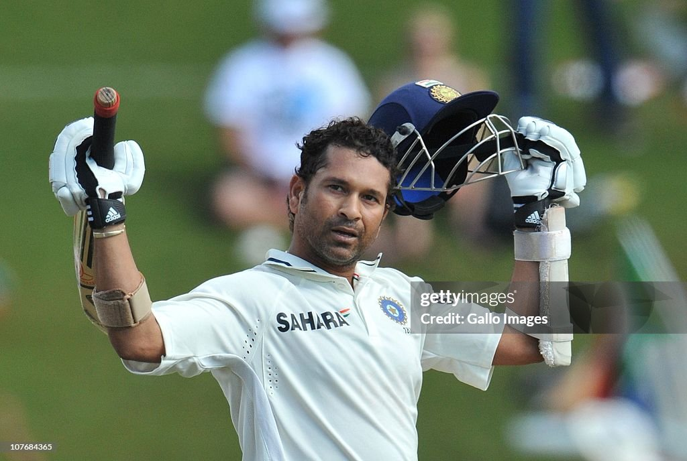

Sachin Ramesh Tendulkar (/ˌsʌtʃɪn tɛnˈduːlkər/ ⓘ; Marathi: [sətɕin t̪eɳɖulkəɾ]; born 24 April 1973) is an Indian former international cricketer who captained the Indian national team. He is widely regarded as one of the greatest cricketers of all time,[5] and is the holder of several world records, including being the all-time highest run-scorer in both ODI and Test cricket,[6] receiving the most player of the match awards in international cricket,[7] and being the only batsman to score 100 international centuries.[8] Tendulkar was a Member of Parliament, Rajya Sabha by presidential nomination from 2012 to 2018.[9][10]
